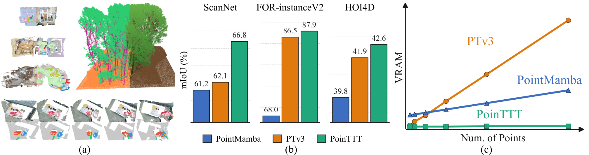
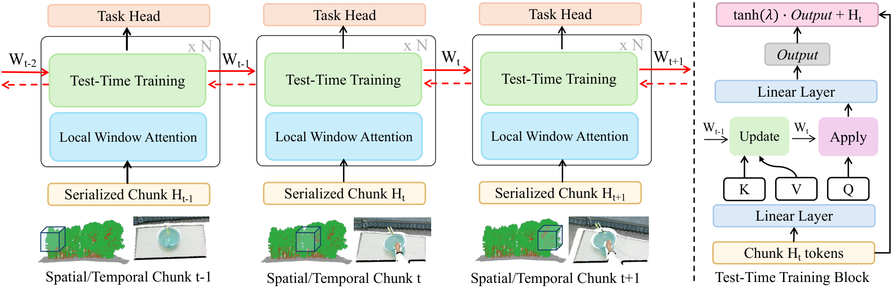
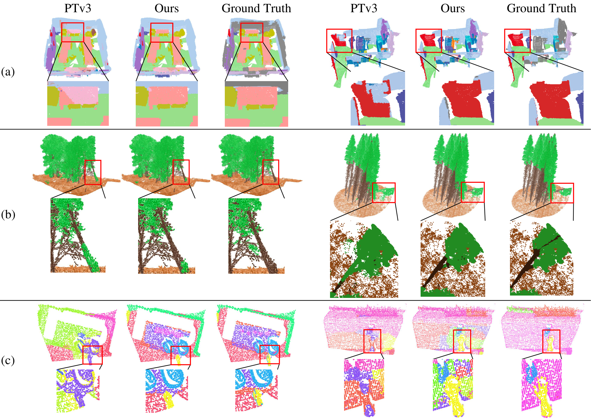

TL;DR PoinTTT carries a small set of fast weights from one point-cloud chunk to the next. Each prediction can use context from across a forest plot or from earlier frames in a 4D stream.

Abstract
Real-world point clouds are not naturally bounded: 3D scans grow as sensors move through rooms, LiDAR surveys extend across forest plots, and 4D captures can span thousands of frames. Yet most point-cloud encoders are designed for fixed-size inputs, forcing inference-time cropping or tiling that loses long-range context and requires ad-hoc output stitching. We formulate arbitrary-extent point-cloud segmentation as recurrent sequence-of-chunks processing and introduce PoinTTT, a recurrent point-cloud encoder built on Point Transformer V3 (PTv3). PoinTTT augments PTv3 with residual Large Chunk Test-Time Training (LaCT) layers in both the encoder and decoder. Each LaCT layer maintains compact fast weights as recurrent state: tokens from each chunk update the fast weights, which are then applied to produce chunk features and passed to the next chunk. This design allows PoinTTT to train on fixed-size chunks while processing scenes of arbitrary spatial or temporal extent, with activation memory bounded by the chunk size. A pilot study on ScanNet and nuScenes shows that recurrent TTT improves segmentation over PTv3 baselines. On FOR-instanceV2, PoinTTT achieves state-of-the-art forest semantic segmentation of 87.9 mIoU with nearly constant memory. On HOI4D, online full-sequence recurrent inference carries state across clips rather than resetting at benchmark boundaries, reaching 42.6 mIoU; a matched full-sequence Mamba control reaches approximately 39.9. These results suggest that test-time training is a practical primitive for scalable spatial and temporal point-cloud understanding.
How PoinTTT carries context

Spatial scenes. A forward pass over the chunks builds a state for the full scene. A second pass reads that state in reverse chunk order to predict labels for the original points.
Temporal streams. On HOI4D, each step reads three frames, updates the state, and predicts labels using observations up to that step. The state persists across the full video.
Qualitative results

Citation
@misc{zhou2026pointtt,
title = {Recurrent Point Transformer via Test-Time Training},
author = {Zhou, Wentao and Chen, Xuweiyi and Saunders, Charles and
RoyChowdhury, Aruni and Cheng, Zezhou},
year = {2026},
url = {https://github.com/UVA-Computer-Vision-Lab/pointtt}
}